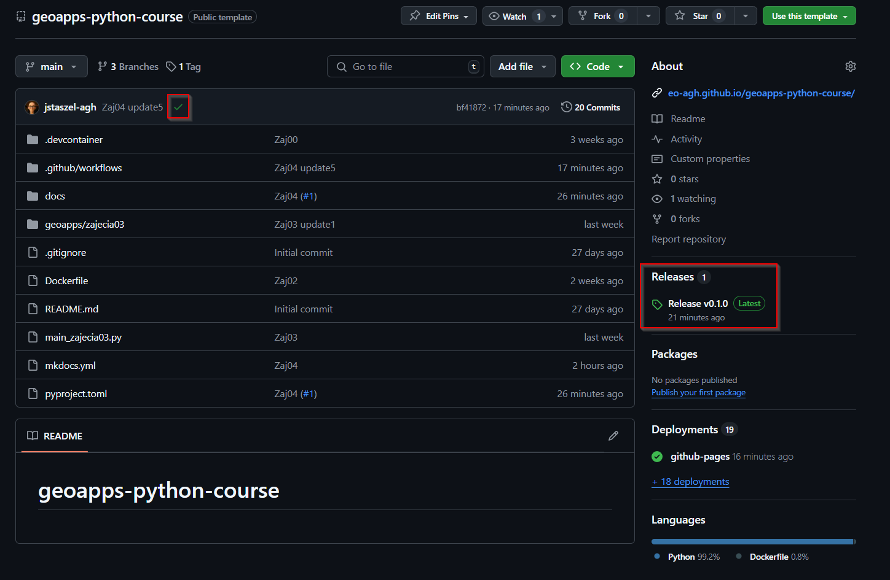

Wstęp
PRZYPOMNIENIE - czym jest moduł?
Moduł w Pythonie to plik z rozszerzeniem .py, który zawiera kod – może to być pojedyncza funkcja, klasa, a nawet cały zestaw narzędzi. Moduły pozwalają nam na przechowywanie kodu w osobnych plikach i łatwe jego importowanie oraz używanie w innych miejscach.
Kiedy używamy instrukcji import, Python próbuje znaleźć odpowiedni moduł w określonych lokalizacjach, które są przechowywane w zmiennej sys.path. Lista tych ścieżek obejmuje:
- Bieżący katalog roboczy – katalog, z którego uruchamiamy skrypt.
- Katalogi standardowe Pythona – ścieżki z bibliotekami standardowymi.
- Katalogi specyficzne dla instalacji – katalogi, które mogą zawierać dodatkowe moduły lub pakiety, np. zainstalowane za pomocą
pip.
U siebie możemy to zobaczyć używając:
import sys
print(sys.path)
Przygotowanie struktury projektu
Wprowadzenie do pakietów
Pakiet w Pythonie to katalog (folder) zawierający moduły. Pakiety pozwalają na hierarchiczne organizowanie kodu, co jest szczególnie użyteczne w większych projektach. Każdy pakiet jest katalogiem, który powinien zawierać plik __init__.py, aby Python mógł go rozpoznać jako pakiet.
Pakiety mogą być zagnieżdżane w innych pakietach, tworząc strukturę drzewiastą. Przykładowa struktura pakietu geoapps mogłaby wyglądać tak:
nasz-projekt/
├── geoapps/
│ ├── __init__.py
│ └── zajecia01/
│ ├── __init__.py
│ ├── dodawanie.py
│ ├── odejmowanie.py
│ └── dzielenie.py
├── docs/
└── tests/
Pliki __init__.py
Jak widzimy w przykładowej strukturze powyżej, każdy katalog, który ma być rozpoznawany jako część pakietu, posiada ten plik. Początkowo, w starszych wersjach Pythona, ten plik był obowiązkowy; obecnie w Pythonie 3.x nadal jest używany, ale jego obecność nie jest wymagana do rozpoznania katalogu jako pakietu. Jednak __init__.py nadal ma ważne funkcje:
- Inicjalizacja pakietu – plik
__init__.pyjest uruchamiany przy pierwszym importowaniu pakietu, więc można w nim umieścić kod, który zostanie wykonany na początku. - Kontrolowanie importów – możemy zdefiniować listę
__all__w__init__.py, aby kontrolować, które moduły zostaną zaimportowane, gdy użyjemyfrom pakiet import *.
Przykładowy plik __init__.py znajdujący się w zajęcia01:
__all__ = ["dodawanie", "odejmowanie"]
Dzięki temu przy from zajecia01 import * zostaną zaimportowane tylko moduły dodawanie i odejmowanie, podczas gdy dzielenie zostanie pominięte.
Importowanie modułów
Mamy 2 główne typy importu:
- Import bezwzględny – polega na podaniu pełnej ścieżki do modułu lub pakietu, np.:
from geoapps import *,from geoapps.zajecia01 import dodawanie,from geoapps.zajecia01.dodawanie import suma,import geoapps.zajecia01.dodawanie as dod.
- Import względny – używany jest wewnątrz pakietów i bazuje na kropkach wiodących:
- Jedna kropka
.oznacza bieżący pakiet. - Dwie kropki
..oznaczają pakiet nadrzędny.
- Jedna kropka
Danger
Import względny działa tylko wtedy, gdy jesteśmy w kontekście pakietu, np. podczas importowania modułów wewnątrz innego modułu tego samego pakietu.
Przykład - importowanie bezwzględne
from geoapps.zajecia01 import dodawanie, odejmowanie
print(dodawanie.dodaj(5, 3)) # Użycie funkcji dodaj z modułu dodawanie
print(odejmowanie.odejmij(5, 3)) # Użycie funkcji odejmij z modułu odejmowanie
Przykład - importowanie względne - WEWNĄTRZ PAKIETU
Będąc w pliku zajecia01/mnozenie.py
from .dodawanie import dodaj # Import z bieżącego pakietu
def mnoz(a, b):
wynik = 0
for _ in range(b):
wynik = dodaj(wynik, a) # Użycie funkcji dodaj
return wynik
📝 Zadania
-
Stwórz strukturę pakietu
geoappsi przenieś do niego stworzone do tej pory skrypty (z wszystkich zajęć). Można użyć struktury z przykładu, czyli subpakiety odpowiadające konkretnym zajęciom np.zajecia01.Tip
Nie zapomnij dodać plików
__init__.pywewnątrz pakietów, a także opcjonalnie list__all__w tych plikach. -
Wykorzystując pakiet
geoapps, stwórz w głównym katalogu plikrun_geoapps.py, zaimportuj do niego wybrane funkcje / klasy i wywołaj przykładowy kod z ich użyciem.
Budowanie pakietu
Plik konfiguracyjny pyproject.toml
Plik pyproject.toml to centralne miejsce konfiguracji pakietu. Od 2020 roku jest to zalecany (i standardowy) format dla wszystkich narzędzi do budowania pakietów (zgodnie z PEP 517/518/621). Pozwala narzędziom jak pip, build, twine itp. rozpoznać, jak zbudować i zainstalować pakiet.
Czy można używać czegoś innego niż pyproject.toml?
Tradycyjnie używano pliku setup.py, a następnie dodano setup.cfg jako opcję konfiguracji bezpośredniej w formacie .ini. Obecnie, możliwa jest konfiguracja pakietów wyłącznie za pomocą pyproject.toml, który upraszcza zarządzanie projektami w całym ekosystemie.
W najnowszych wersjach setuptools wystarczy plik pyproject.toml, w poprzednich mogą być wymagane inne / pozostałe.
Więcej szczegółów w dokumentacji setuptools.
Plik pyproject.toml powinien się znaleźć w głównym katalogu projektu.
Zawartość pyproject.toml - przechowuje szczegółowe informacje o projekcie, takie jak nazwa, wersja, autor oraz wymagania dla systemu budowania pakietu.
[build-system]
requires = ["setuptools", "wheel"]
build-backend = "setuptools.build_meta"
[project]
name = "geoapps"
version = "0.1.0"
requires-python = ">=3.10.0"
description = "Pakiet z kodem z zajęć"
authors = [
{ name = "Jakub Staszel", email = "jstaszel@agh.edu.pl" }
]
[tool.setuptools.packages.find]
where = ["."]
exclude = ["docs", "tests"]
Instalacja pakietu w trybie edytowalnym
Żeby mieć możliwość pracy na lokalnym pakiecie (ale już wersji zdefiniowanej w pyproject.toml oraz bez uzależnienia od sys.path), wystarczy zainstalować pakiet w trybie edytowalnym za pomocą pip install -e . w terminalu. Tworzone zmiany będą widoczne od razu w Pythonie bez konieczności reinstalacji pakietu.
To nie jest jedyna dopuszczalna struktura projektu!
Aktualnie setuptools wspiera automatyczne przeszukiwanie 2 typów struktur projektów, na tych zajęciach stworzyliśmy flat-layout, więcej szczegółów tutaj.
Zarządzanie zależnościami pakietu
Kiedy budujemy nasz pakiet lokalnie, proces budowy przebiega bez problemów, ponieważ wszystkie zależności są już zainstalowane i dostępne w środowisku. W takim przypadku narzędzia takie jak build czy setuptools korzystają z tych zależności lokalnie i poprawnie budują paczkę.
Po zbudowaniu pakietu sytuacja się zmienia – użytkownicy, którzy chcą zainstalować nasz pakiet, nie będą mieli automatycznie dostępu do zależności używanych podczas jego budowy. Aby upewnić się, że użytkownicy będą mogli poprawnie zainstalować ten pakiet, konieczne jest jasne określenie jego zależności runtime w pliku konfiguracyjnym projektu.
I tak to np. może wyglądać w pliku pyproject.toml:
[build-system]
requires = ["setuptools", "wheel"]
build-backend = "setuptools.build_meta"
[project]
name = "moj_pakiet"
version = "1.0.0"
description = "Przykład pakietu"
dependencies = [
"numpy>=1.21.0,<2.0.0",
"pandas>=1.3.0",
]
Wersjonowanie pakietów
Wersjonowanie to proces przypisywania numeru wersji do konkretnego stanu projektu. Dzięki temu możemy jasno komunikować co się zmieniło, czy wersja jest stabilna oraz czy aktualizacja wpływa na kompatybilność z innymi projektami.
Dobrze prowadzone wersjonowanie pozwala zachować porządek w historii zmian, umożliwić instalację konkretnej wersji (np. do testów) i uniknąć błędów wynikających z nieoczekiwanych zmian w kodzie.
Konwencja SemVer (Semantic Versioning)
Najczęściej stosowaną konwencją jest Semantic Versioning, czyli:
MAJOR.MINOR.PATCH
Szczegóły:
- MAJOR (np. 2.0.0) - zmiany niekompatybilne z poprzednimi wersjami (np. usunięcie lub zmiana działania funkcji),
- MINOR (np. 1.3.0) - nowe funkcje, ale kompatybilne z poprzednimi wersjami.
- PATCH (np. 1.3.2) - poprawki błędów, bez dodawania nowych funkcji.
Przykład rozwoju wersji:
- 0.1.0 – wstępna wersja rozwojowa,
- 0.2.0 – dodano nowe funkcje,
- 0.2.1 – poprawki błędów,
- 1.0.0 – pierwsza stabilna wersja,
- 2.0.0 – duża zmiana, niekompatybilna z 1.x.
Budowanie pakietu
Budowanie pakietu to process tworzenia dystrybucji kodu, która może być zainstalowana przez innych użytkowników lub na różnych maszynach. W Pythonie używa się narzędzi takich jak setuptools i wheel, aby stworzyć gotową paczkę w formatach .whl (wheel) i .tar.gz (source distribution).
Aby zbudować pakiet wystarczy mieć zainstalowany pakiet build (dokumentacja), a następnie uruchomić go poprzez python -m build.
Paczka zbudowana zostanie w wersji zgodnej z pyproject.toml, należy najpierw zaktualizować ten plik!
pip install build
python -m build
Pliki powinny zostać stworzone w folderze dist:
.tar.gz– klasyczna paczka źródłowa,.whl(wheel) – zoptymalizowana binarna paczka do szybkiej instalacji.
Co to jest wheel?
Wheel to nowoczesny format paczek dla Pythona (rozszerzenie .whl).
Zalety: - szybka instalacja bez potrzeby kompilacji, - lepsze wsparcie dla CI/CD i instalacji zależności systemowych, - obsługa zależności i metadanych.
Instalacja pliku .whl:
pip install <dist>/geoapps-0.1.0-py3-none-any.whl
Publikowanie pakietu
Publikacja pakietu to kluczowy krok w procesie udostępnienia oprogramowania innym użytkownikom, zespołom lub całej społeczności. Udostępniając pakiet, umożliwiamy jego łatwą instalację, aktualizację i wykorzystanie w innych projektach. Process publikacji zależy od repozytorium pakietów, na którym chcemy opublikować pakiet, a także od tego, czy nasz pakiet jest przeznaczony do użytku prywatnego, publicznego, czy specjalistycznego.
Platformy do dystrybucji pakietów
PyPI
Jest domyślną i najczęściej używaną platformą. Pozwala na łatwą instalację pakietów za pomocą pip oraz ich aktualizację.
Instalacja dostępnego tam pakietu: pip install <nazwa_pakietu>.
conda-forge
Platforms do dystrybucji pakietów oparta na systemie Conda, który wspiera pakiety Python i nie tylko. Conda-Forge to społecznościowe repozytorium, które umożliwia tworzenie i publikowanie pakietów w szerokiej gamie języków programowania.
Instalacja dostępnego tam pakietu: conda install -c conda-forge <nazwa_pakietu>.
Wymaga Conda do zarządzania.
GitHub Packages
Platforms dystrybucji zintegrowana bezpośrednio z GitHub, co umożliwia publikację pakietów obok kodu źródłowego i integrację z GitHub Actions.
Instalacja dostępnego tam pakietu: w zależności od konfiguracji pip install lub conda install.
Inne
- Anaconda Cloud
- Artifactory
- PyPI Pro
- Docker Hub
Publikowanie pakietu
Na przykładzie GitHub. Zakładając, że wszystkie nasze zmiany, które mają być częścią opublikowanej wersji są już na głównej gałęzi, pozostaje nam dodanie taga:
# tagi chcemy dodawać na głównej gałęzi
git checkout main
git pull origin main
# dodanie taga zgodnego z wersją w pyproject.toml
git tag v0.1.0
git push origin v0.1.0
Czym są git tags?
Git tagi to specjalne "etykiety" przypinane do konkretnych commitów, najczęściej służące do oznaczania wersji projektu (np. v1.0.0, v2.1.3). W odróżnieniu od branchy, tagi są niezmienne – raz przypisane do commita, pozostają z nim związane na stałe (chyba że zostaną usunięte i utworzone ponownie). Tagi są kluczowe w cyklu wydawniczym: pozwalają budować i publikować wersje paczek, tworzyć release’y na GitHubie, a także odtwarzać stan repozytorium z momentu konkretnego wydania. Oprócz wersjonowania, tagów można używać również do: oznaczania ważnych punktów w historii (np. "pierwsza wersja prototypu"), tworzenia snapshotów do analizy, czy wskazywania milestone’ów w pracy zespołowej. Są lekkie, czytelne i dobrze wspierane przez narzędzia CI/CD.
Manualnie
Tego nie robimy, wykonamy zautomatyzowaną wersję!
Opublikować pakiety możemy za pomocą release w GitHub UI, poprzez zakładkę Releases. To narzędzie zadba o zbudowanie plików dla paczki.
Automatycznie
Za pomocą workflow w GitHub Actions ./.github/workflows/release.yml wykonujemy wszystkie kroki, czyli zbudowanie pakietu oraz opublikowanie.
Po tym, po wejściu na repozytorium zdalne, powinniśmy widzieć status workflow oraz gotowy release.

Wykorzystanie pakietu
Teraz inni użytkownicy będą mogli korzystać z konkretnych wersji pakietu. W przypadku GitHub, za pomocą komendy:
pip install https://github.com/eo-agh/geoapps-python-course/releases/download/v0.1.0/geoapps-0.1.0-py3-none-any.whl
Oraz odpowiednio innych dla PyPI czy conda-forge (w zależności od tego gdzie publikujemy pakiet).
📝 Zadania
- Stwórz w głównym katalogu projektu plik
pyproject.tomli wypełnij go odpowiednią treścią używając dokumentacji i przykładu konfiguracji. - Zainstaluj swój zdefiniowany pakiet w trybie edytowalnym (
pip install -e .). - Opublikuj pierwszą wersję pakietu w GitHub Packages w sposób zautomatyzowany.
Uwaga
Po zainstalowaniu pakietu w wersji edytowalnej powinniśmy mieć możliwość importowania za pomocą from geoapps import * w sposób bezwzględny, czyli bez względu na lokalizację skryptu. Można to przetestować przenosząć tymczasowo main_zajecia03.py do folderu tests.